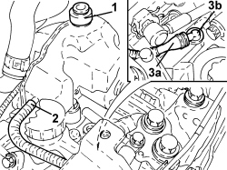

2127C22 PIPE FROM HYDRAULIC SPEED SELECTION ACTUATOR UNIT TO FLUID RESERVOIR - R.R.
- Path
- Procedures > 21 GEARBOX UNIT > 2127 ELECTRO-HYDRAULIC SELECTION GEARBOX EXTERNAL CONTROLS > 2127C HYDRAULIC GEAR SELECTION SYSTEM > 2127C22 PIPE FROM HYDRAULIC SPEED SELECTION ACTUATOR UNIT TO FLUID RESERVOIR - R.R.
- Kind
- repair procedure (removal / refitting; the operation number is the code)
- Applies to
- engines: 2.2 JTS; all production periods
- Interactive page
- https://sloeber94.github.io/elrnDB-aBrrSpdr/en/#/946004302
Applies to: engines: 2.2 JTS; all production periods
 Removing
Removing
 Refitting
Refitting- Place the gear lever in N.
- Connect an Examiner and run the depressurization procedure.
- Position the vehicle on a lift.
Op. 5530B52 BATTERY SUPPORT/DRIP TRAY - R.R
Op. 7055B54 UNDER ENGINE PROTECTION/GUARD - R.R.
1. Undo the cap and draw off the fluid from the reservoir using a suitable syringe.
2. Disconnect the pipe from the hydraulic unit to the reservoir, reservoir side.
3. Disconnect the pipe from the hydraulic unit to the reservoir (3a) from the angular connector (3b) and remove it.

Applies to: engines: 2.2 JTS; all production periods
Refitting
Removing- Connect a new pipe from the hydraulic unit to the reservoir, angular connector side.
- Connect the pipe from the hydraulic unit to the reservoir, reservoir side.
Op. 0010T48 HYDRAULIC SYSTEM FOR GEARBOX WITH HYDRAULIC SELECTION - BLEED AIR
Op. 7055B54 UNDER ENGINE PROTECTION/GUARD - R.R.
Op. 5530B52 BATTERY SUPPORT/DRIP TRAY - R.R
- Remove the vehicle from the lift.
Topics linked from this page (5)
- 0010T47 HYDRAULIC SYSTEM FLUID FOR GEARBOX WITH HYDRAULIC SELECTION CHECK LEVEL AND TOP UP, IF NECESSARY
- 0010T48 HYDRAULIC SYSTEM FOR GEARBOX WITH HYDRAULIC SELECTION - BLEED AIR
- 5530B10 BATTERY - R+R
- 5530B52 BATTERY SUPPORT/DRIP TRAY - R.R
- 7055B54 UNDER ENGINE PROTECTION/GUARD - R.R.
Topics that link to this page (14)
- 1004B24 POWER UNIT WITH MANUAL GEARBOX WITH HYDRAULIC SELECTION - R.R.
- 1020D36 FLYWHEEL SIDE OIL SEAL - REPLACE FOR MANUAL GEARBOX WITH HYDRAULIC SELECTION VERSIONS
- 1024B11 ENGINE FLYWHEEL - R.R. FOR MANUAL GEARBOX WITH HYDRAULIC SELECTION VERSIONS
- 1810A28 CLUTCH - R.R. FOR MANUAL GEARBOX WITH HYDRAULIC SELECTION VERSIONS
- 2110A11 MANUAL GEARBOX WITH DIFFERENTIAL - R.R. FOR VERSIONS WITH HYDRAULIC SELECTION
- 2127C10 SUPPORT FOR ELECTROHYDRAULIC CIRCUIT RESERVOIR AND SYSTEM PUMP - R.R.
- 2127C12 HYDRAULIC GEAR SELECTION FLUID RESERVOIR - R.R.
- 2127C20 PIPE FROM PUMP TO HYDRAULIC SPEED SELECTION ACTUATOR UNIT - R.R.
- 2127C40 HYDRAULIC SPEED SELECTION HYDRAULIC ACTUATOR UNIT AND CLUTCH - R.R.
- 2127C45 CLUTCH OPERATING CYLINDER, OF ELECTROHYDRAULIC SELECTION - R.R .
- 2127C52 ODD AND EVEN GEAR ENGAGEMENT SOLENOIDS - R.R.
- 2127C54 GEAR SELECTION SOLENOIDS - R.R.
- 2127C56 CLUTCH CONTROL SOLENOID - R.R.
- 2127E50 HYDRAULIC SELECTION GEARBOX CIRCUIT PRESSURE SENSOR - R.R.